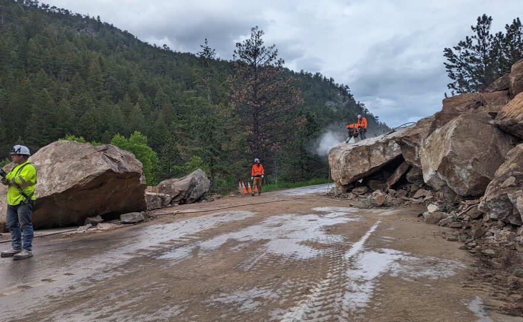

Landslides, What Are They?
Landslides occur when the material the earth is made out of is to weak to withstand the forces against it. Landslides can be triggered by forces that would further weaken the ground such as: rainfall, snowmelt, changes in water level, stream erosion, ground water (basically anything to do with water), earthquakes, volcanism, and human activity (U.S. Geological Survey, 2024a).

Image from (Jahan, 2023)
Geographic Elements of Landslides
Also unfortunate: for us Utahns, the rocky mountains are one of the worst areas to be in: “Although all 50 states are subject to landslide activity, the Rocky Mountain, Appalachian, and Pacific Coast regions generally suffer the greatest landslide losses.” (FEMA, 2024)

Image From (Roedel, 2024)
Impacts of Landslides
Adding to this, a few more side effects include contaminated water and/or food, blocked road ways (preventing fast emergency response), and the loss of livelihoods and jobs (European Climate And Health Observatory, 2024 a).
Image from (European Climate And Health Observatory, 2024 b)
Mitigation and Preparation
Many deaths occur during sleep on the lower floors, to remedy this: “Stay alert and awake during a storm that could cause a landslide. Many deaths from landslides occur while people are sleeping”(United States, n.d.).
Ready.gov recommends a few strategies to prepare: Have a plan and be aware of warning systems such as the EAS, find the nearest shelter for your area if you feel unsafe (Text SHELTER + your ZIP code to 43362 (4FEMA) to find the nearest shelter), and build an emergency kit just in case: you should include things such as water, food, medical supplies, maps, a flashlight, a dust mask, and a whistle (in case of needing rescue) (United States, n.d.).
Image From (Crisisequipped, n.d.)
Maps
U.S. Landslide Inventory, September 2023 (U.S. Geological Survey, 2024b)
Generalized landslide map (U.S. Geological Survey, 2024c)
Compiled polygons showing landslides (UtahAGRC, 2024)
Beside is the rockfall map of the cities from Magna (top image) to Herriman (bottom image)
Images From (Utah Geological Survey, n.d.)
Beside is a map of the cities from Magna (top image) to Herriman (bottom image) and their susceptibility to landslides
Images From (Utah Geological Survey, n.d.)
The Plan
If your area is in an escepcially susecptible area, finding the nearest shelter may be the best option (Text SHELTER + your ZIP code to 43362 (4FEMA) to find the nearest shelter) is of vital importance. (Do consider alternative shelters as FEMA doens't have shelters in every state)
If you need to evacuate, bring a safety kit and all living things on your property. If you don't need to evacuate, make sure your property is ready for the landslide before it occurs, and have a radio ready to listen for updates. Stay away from the landslide at all costs
Again, the best option you have is to be away from any potential landslides and be prepared for one before they strike!
Resources To Consider:
FEMA. (n.d.). Landslide | Where. Retrieved November 8, 2024, from https://community.fema.gov/ProtectiveActions/s/article/Landslide-Where
European Climate And Health Observatory. (2024, July 3 a). Landslides. https://climate-adapt.eea.europa.eu/en/observatory/evidence/health-effects/landslides
European Climate And Health Observatory. (2024, July 3 b). Direct and indirect health impacts of landslides [Image]. https://climate-adapt.eea.europa.eu/en/observatory/evidence/health-effects/landslides
Jahan, A. (2023, April 1). [Image of landslide blocking roadway]. Linkedin. https://www.linkedin.com/pulse/causes-effects-landslide-abid-jahan
Roedel, K. (2024, September 25). Landslides pose a serious threat to communities in the Rocky and Sierra Nevada mountains [Image]. KISU. https://www.kisu.org/2024-09-27/landslides-serious-threat-communities-rocky-sierra-nevada-mountains
Crisisequipped. (n.d.) How to Prepare for a Landslide: A Guide + Checklist landslide preparedness[Image]. https://crisisequipped.com/how-to-prepare-for-a-landslide/
United States. (n.d.). Ready.gov | Landslides & Debris Flow. Retrieved November 8, 2024, from https://www.ready.gov/landslides-debris-flow https://www.ready.gov/landslides-debris-flow
U.S. Geological Survey. (2024, November 8 a). What is a landslide and what causes one?. Retrieved November 8, 2024, from https://www.usgs.gov/faqs/what-a-landslide-and-what-causes-one
U.S. Geological Survey. (2024, November 8 b). U.S. Landslide Inventory, September 2023 [Image]. Retrieved November 8, 2024, from https://www.usgs.gov/media/images/us-landslide-inventory-september-2023
U.S. Geological Survey. (2024, November 8 c). Generalized landslide map [Image]. Retrieved November 8, 2024, from https://geology.utah.gov/hazards/landslides/
UtahAGRC. (2024, Nov 8). Landslide deposit information of Utah compiled by the Utah Geological Survey (UGS) [Digital Map/Dataset]. Arcgis. Retrieved November 8, 2024, from https://services1.arcgis.com/99lidPhWCzftIe9K/arcgis/rest/services/LandslideCompilationPolygons/FeatureServer
Utah Geological Survey. (n.d.) Utah Geologic Hazards Portal [Digital Map/Dataset]. Retrieved November 8, 2024, from https://hazards.geology.utah.gov/#
World Health Organization. (n.d.). Landslides. Retrieved November 8, 2024, from https://www.who.int/health-topics/landslides#tab=tab_2